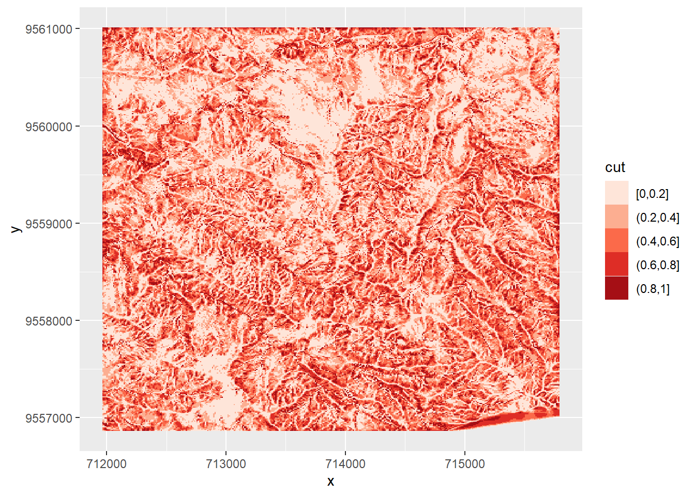

library(tidyverse)
library(sf)
library(terra)
# install.packages("spDataLarge", repos = "https://geocompr.r-universe.dev")
data("lsl", package = "spDataLarge")
ta <- terra::rast(system.file("raster/ta.tif", package = "spDataLarge"))Aprendizaje Estadístico
Minicurso SOCHE
1 Cargar datos
Este ejemplo está basado en el capítulo 12 del libro Geocomputation with R y utiliza un set de datos del paquete {spDataLarge}.
El set de datos contiene puntos de inicio de deslizamientos de tierra en una zona de Ecuador en una tabla denominada lsl, los campos de la tabla son:
- slope: ángulo de pendiente (°)
- cplan: curvatura en planta (rad m−1) que expresa la convergencia o divergencia de una pendiente y, por lo tanto, el flujo de agua
- cprof: curvatura del perfil (rad m-1) como medida de la aceleración del flujo, también conocida como cambio de pendiente descendente en el ángulo de la pendiente
- elev: elevación (m s.n.m.) como representación de las diferentes zonas altitudinales de vegetación y precipitación en el área de estudio
- log10_carea: el logaritmo decádico del área de captación (log10 m2) que representa la cantidad de agua que fluye hacia un lugar
También cargaremos una colección de rasters con las variables espacializadas, llamado ta.
2 Enfoque tradicional
2.1 Definir modelo
En este caso usaremos un glm con familia bionamial.
fit = glm(lslpts ~ slope + cplan + cprof + elev + log10_carea,
family = binomial(),
data = lsl)
class(fit)[1] "glm" "lm" fit
Call: glm(formula = lslpts ~ slope + cplan + cprof + elev + log10_carea,
family = binomial(), data = lsl)
Coefficients:
(Intercept) slope cplan cprof elev log10_carea
2.511e+00 7.901e-02 -2.894e+01 -1.756e+01 1.789e-04 -2.275e+00
Degrees of Freedom: 349 Total (i.e. Null); 344 Residual
Null Deviance: 485.2
Residual Deviance: 372.8 AIC: 384.82.1.1 Predicciones
Podemos obtener las predicciones con la función predict().
Para aplicar esas predicciones de forma espacial, utilizando nuestra colección de variables raster, usamos terra::predict():
pred_glm <- predict(object = fit, type = "response")
head(pred_glm) 1 2 3 4 5 6
0.19010373 0.11718500 0.09519487 0.25030946 0.33819463 0.15754547 pred <- terra::predict(ta, model = fit, type = "response")2.2 Visualización
Visualizamos con ggplot
lsl_tab <- pred %>%
as.data.frame(xy = TRUE) %>%
mutate(lyr1 = round(lyr1, 2),
cut = cut_interval(lyr1, n = 5, dig.lab = 1))
ggplot(lsl_tab)+
geom_tile(aes(x = x, y = y, fill = cut))+
scale_fill_brewer(palette = "Reds")
2.3 Cálculo de AUROC
Esta es una métrica de rendimiento que puede utilizarse para evaluar los modelos de clasificación.

Para saber más sobre esta métrica puedes consultar acá
pROC::auc(pROC::roc(lsl$lslpts, fitted(fit)))Area under the curve: 0.8216Sin embargo, es necesario ir más allá en el análisis de nuestro modelo, ya que esta métrica no toma en consideración el aspecto espacial de los datos.

3 Validación espacial con paquete {mlr3}
necesitaremos los siguiente paquetes:
library(mlr3)
library(mlr3learners)
library(mlr3extralearners)
library(mlr3spatiotempcv)3.1 Crear una tarea
task = mlr3spatiotempcv::TaskClassifST$new(
id = "ecuador_lsl",
backend = mlr3::as_data_backend(lsl),
target = "lslpts",
positive = "TRUE",
coordinate_names = c("x", "y"),
extra_args = list(
coords_as_features = FALSE,
crs = "EPSG:32717")
)3.2 Establecer el modelo y el tipo de resampleo
Para conocer los diferentes modelos que podemos utilizar podemos correr lo siguiente:
mlr3extralearners::list_mlr3learners(
filter = list(class = "classif", properties = "twoclass"),
select = c("id", "mlr3_package", "required_packages")) id mlr3_package
1: classif.AdaBoostM1 mlr3extralearners
2: classif.bart mlr3extralearners
3: classif.C50 mlr3extralearners
4: classif.catboost mlr3extralearners
5: classif.cforest mlr3extralearners
6: classif.ctree mlr3extralearners
7: classif.cv_glmnet mlr3learners
8: classif.debug mlr3
9: classif.earth mlr3extralearners
10: classif.featureless mlr3
11: classif.fnn mlr3extralearners
12: classif.gam mlr3extralearners
13: classif.gamboost mlr3extralearners
14: classif.gausspr mlr3extralearners
15: classif.gbm mlr3extralearners
16: classif.glmboost mlr3extralearners
17: classif.glmnet mlr3learners
18: classif.IBk mlr3extralearners
19: classif.J48 mlr3extralearners
20: classif.JRip mlr3extralearners
21: classif.kknn mlr3learners
22: classif.ksvm mlr3extralearners
23: classif.lda mlr3learners
24: classif.liblinear mlr3extralearners
25: classif.lightgbm mlr3extralearners
26: classif.LMT mlr3extralearners
27: classif.log_reg mlr3learners
28: classif.lssvm mlr3extralearners
29: classif.mob mlr3extralearners
30: classif.multinom mlr3learners
31: classif.naive_bayes mlr3learners
32: classif.nnet mlr3learners
33: classif.OneR mlr3extralearners
34: classif.PART mlr3extralearners
35: classif.qda mlr3learners
36: classif.randomForest mlr3extralearners
37: classif.ranger mlr3learners
38: classif.rfsrc mlr3extralearners
39: classif.rpart mlr3
40: classif.svm mlr3learners
41: classif.xgboost mlr3learners
id mlr3_package
required_packages
1: mlr3,mlr3extralearners,RWeka
2: mlr3,mlr3extralearners,dbarts
3: mlr3,mlr3extralearners,C50
4: mlr3,mlr3extralearners,catboost
5: mlr3,mlr3extralearners,partykit,sandwich,coin
6: mlr3,mlr3extralearners,partykit,sandwich,coin
7: mlr3,mlr3learners,glmnet
8: mlr3
9: mlr3,mlr3extralearners,earth
10: mlr3
11: mlr3,mlr3extralearners,FNN
12: mlr3,mlr3extralearners,mgcv
13: mlr3,mlr3extralearners,mboost
14: mlr3,mlr3extralearners,kernlab
15: mlr3,mlr3extralearners,gbm
16: mlr3,mlr3extralearners,mboost
17: mlr3,mlr3learners,glmnet
18: mlr3,mlr3extralearners,RWeka
19: mlr3,mlr3extralearners,RWeka
20: mlr3,mlr3extralearners,RWeka
21: mlr3,mlr3learners,kknn
22: mlr3,mlr3extralearners,kernlab
23: mlr3,mlr3learners,MASS
24: mlr3,mlr3extralearners,LiblineaR
25: mlr3,mlr3extralearners,lightgbm
26: mlr3,mlr3extralearners,RWeka
27: mlr3,mlr3learners,stats
28: mlr3,mlr3extralearners,kernlab
29: mlr3,mlr3extralearners,partykit,sandwich,coin
30: mlr3,mlr3learners,nnet
31: mlr3,mlr3learners,e1071
32: mlr3,mlr3learners,nnet
33: mlr3,mlr3extralearners,RWeka
34: mlr3,mlr3extralearners,RWeka
35: mlr3,mlr3learners,MASS
36: mlr3,mlr3extralearners,randomForest
37: mlr3,mlr3learners,ranger
38: mlr3,mlr3extralearners,randomForestSRC
39: mlr3,rpart
40: mlr3,mlr3learners,e1071
41: mlr3,mlr3learners,xgboost
required_packagesGeneramos un objeto con nuestro método y otro con el tipo de resampleo, que en este caso es repeated_spcv_coords para que sea valización cruzada espacial.
learner <- mlr3::lrn("classif.log_reg", predict_type = "prob")
resampling <- mlr3::rsmp("repeated_spcv_coords", folds = 5, repeats = 100)3.3 Correr resampleo con validación cruzada espacial
rr_spcv_glm = mlr3::resample(task = task,
learner = learner,
resampling = resampling)INFO [15:13:03.775] [mlr3] Applying learner 'classif.log_reg' on task 'ecuador_lsl' (iter 1/500)
INFO [15:13:03.852] [mlr3] Applying learner 'classif.log_reg' on task 'ecuador_lsl' (iter 2/500)
INFO [15:13:03.901] [mlr3] Applying learner 'classif.log_reg' on task 'ecuador_lsl' (iter 3/500)
INFO [15:13:03.948] [mlr3] Applying learner 'classif.log_reg' on task 'ecuador_lsl' (iter 4/500)
INFO [15:13:03.988] [mlr3] Applying learner 'classif.log_reg' on task 'ecuador_lsl' (iter 5/500)
INFO [15:13:04.028] [mlr3] Applying learner 'classif.log_reg' on task 'ecuador_lsl' (iter 6/500)
INFO [15:13:04.069] [mlr3] Applying learner 'classif.log_reg' on task 'ecuador_lsl' (iter 7/500)
INFO [15:13:04.110] [mlr3] Applying learner 'classif.log_reg' on task 'ecuador_lsl' (iter 8/500)
INFO [15:13:04.151] [mlr3] Applying learner 'classif.log_reg' on task 'ecuador_lsl' (iter 9/500)
INFO [15:13:04.191] [mlr3] Applying learner 'classif.log_reg' on task 'ecuador_lsl' (iter 10/500)
INFO [15:13:04.239] [mlr3] Applying learner 'classif.log_reg' on task 'ecuador_lsl' (iter 11/500)
INFO [15:13:04.281] [mlr3] Applying learner 'classif.log_reg' on task 'ecuador_lsl' (iter 12/500)
INFO [15:13:04.321] [mlr3] Applying learner 'classif.log_reg' on task 'ecuador_lsl' (iter 13/500)
INFO [15:13:04.362] [mlr3] Applying learner 'classif.log_reg' on task 'ecuador_lsl' (iter 14/500)
INFO [15:13:04.402] [mlr3] Applying learner 'classif.log_reg' on task 'ecuador_lsl' (iter 15/500)
INFO [15:13:04.442] [mlr3] Applying learner 'classif.log_reg' on task 'ecuador_lsl' (iter 16/500)
INFO [15:13:04.482] [mlr3] Applying learner 'classif.log_reg' on task 'ecuador_lsl' (iter 17/500)
INFO [15:13:04.529] [mlr3] Applying learner 'classif.log_reg' on task 'ecuador_lsl' (iter 18/500)
INFO [15:13:04.569] [mlr3] Applying learner 'classif.log_reg' on task 'ecuador_lsl' (iter 19/500)
INFO [15:13:04.610] [mlr3] Applying learner 'classif.log_reg' on task 'ecuador_lsl' (iter 20/500)
INFO [15:13:04.650] [mlr3] Applying learner 'classif.log_reg' on task 'ecuador_lsl' (iter 21/500)
INFO [15:13:04.691] [mlr3] Applying learner 'classif.log_reg' on task 'ecuador_lsl' (iter 22/500)
INFO [15:13:04.733] [mlr3] Applying learner 'classif.log_reg' on task 'ecuador_lsl' (iter 23/500)
INFO [15:13:04.776] [mlr3] Applying learner 'classif.log_reg' on task 'ecuador_lsl' (iter 24/500)
INFO [15:13:04.821] [mlr3] Applying learner 'classif.log_reg' on task 'ecuador_lsl' (iter 25/500)
INFO [15:13:04.871] [mlr3] Applying learner 'classif.log_reg' on task 'ecuador_lsl' (iter 26/500)
INFO [15:13:04.912] [mlr3] Applying learner 'classif.log_reg' on task 'ecuador_lsl' (iter 27/500)
INFO [15:13:04.951] [mlr3] Applying learner 'classif.log_reg' on task 'ecuador_lsl' (iter 28/500)
INFO [15:13:04.992] [mlr3] Applying learner 'classif.log_reg' on task 'ecuador_lsl' (iter 29/500)
INFO [15:13:05.039] [mlr3] Applying learner 'classif.log_reg' on task 'ecuador_lsl' (iter 30/500)
INFO [15:13:05.078] [mlr3] Applying learner 'classif.log_reg' on task 'ecuador_lsl' (iter 31/500)
INFO [15:13:05.119] [mlr3] Applying learner 'classif.log_reg' on task 'ecuador_lsl' (iter 32/500)
INFO [15:13:05.166] [mlr3] Applying learner 'classif.log_reg' on task 'ecuador_lsl' (iter 33/500)
INFO [15:13:05.206] [mlr3] Applying learner 'classif.log_reg' on task 'ecuador_lsl' (iter 34/500)
INFO [15:13:05.248] [mlr3] Applying learner 'classif.log_reg' on task 'ecuador_lsl' (iter 35/500)
INFO [15:13:05.290] [mlr3] Applying learner 'classif.log_reg' on task 'ecuador_lsl' (iter 36/500)
INFO [15:13:05.331] [mlr3] Applying learner 'classif.log_reg' on task 'ecuador_lsl' (iter 37/500)
INFO [15:13:05.371] [mlr3] Applying learner 'classif.log_reg' on task 'ecuador_lsl' (iter 38/500)
INFO [15:13:05.420] [mlr3] Applying learner 'classif.log_reg' on task 'ecuador_lsl' (iter 39/500)
INFO [15:13:05.459] [mlr3] Applying learner 'classif.log_reg' on task 'ecuador_lsl' (iter 40/500)
INFO [15:13:05.500] [mlr3] Applying learner 'classif.log_reg' on task 'ecuador_lsl' (iter 41/500)
INFO [15:13:05.540] [mlr3] Applying learner 'classif.log_reg' on task 'ecuador_lsl' (iter 42/500)
INFO [15:13:05.581] [mlr3] Applying learner 'classif.log_reg' on task 'ecuador_lsl' (iter 43/500)
INFO [15:13:05.622] [mlr3] Applying learner 'classif.log_reg' on task 'ecuador_lsl' (iter 44/500)
INFO [15:13:05.662] [mlr3] Applying learner 'classif.log_reg' on task 'ecuador_lsl' (iter 45/500)
INFO [15:13:05.710] [mlr3] Applying learner 'classif.log_reg' on task 'ecuador_lsl' (iter 46/500)
INFO [15:13:05.751] [mlr3] Applying learner 'classif.log_reg' on task 'ecuador_lsl' (iter 47/500)
INFO [15:13:05.791] [mlr3] Applying learner 'classif.log_reg' on task 'ecuador_lsl' (iter 48/500)
INFO [15:13:05.834] [mlr3] Applying learner 'classif.log_reg' on task 'ecuador_lsl' (iter 49/500)
INFO [15:13:05.876] [mlr3] Applying learner 'classif.log_reg' on task 'ecuador_lsl' (iter 50/500)
INFO [15:13:05.917] [mlr3] Applying learner 'classif.log_reg' on task 'ecuador_lsl' (iter 51/500)
INFO [15:13:05.959] [mlr3] Applying learner 'classif.log_reg' on task 'ecuador_lsl' (iter 52/500)
INFO [15:13:06.007] [mlr3] Applying learner 'classif.log_reg' on task 'ecuador_lsl' (iter 53/500)
INFO [15:13:06.046] [mlr3] Applying learner 'classif.log_reg' on task 'ecuador_lsl' (iter 54/500)
INFO [15:13:06.086] [mlr3] Applying learner 'classif.log_reg' on task 'ecuador_lsl' (iter 55/500)
INFO [15:13:06.128] [mlr3] Applying learner 'classif.log_reg' on task 'ecuador_lsl' (iter 56/500)
INFO [15:13:06.171] [mlr3] Applying learner 'classif.log_reg' on task 'ecuador_lsl' (iter 57/500)
INFO [15:13:06.211] [mlr3] Applying learner 'classif.log_reg' on task 'ecuador_lsl' (iter 58/500)
INFO [15:13:06.252] [mlr3] Applying learner 'classif.log_reg' on task 'ecuador_lsl' (iter 59/500)
INFO [15:13:06.300] [mlr3] Applying learner 'classif.log_reg' on task 'ecuador_lsl' (iter 60/500)
INFO [15:13:06.342] [mlr3] Applying learner 'classif.log_reg' on task 'ecuador_lsl' (iter 61/500)
INFO [15:13:06.383] [mlr3] Applying learner 'classif.log_reg' on task 'ecuador_lsl' (iter 62/500)
INFO [15:13:06.426] [mlr3] Applying learner 'classif.log_reg' on task 'ecuador_lsl' (iter 63/500)
INFO [15:13:06.467] [mlr3] Applying learner 'classif.log_reg' on task 'ecuador_lsl' (iter 64/500)
INFO [15:13:06.511] [mlr3] Applying learner 'classif.log_reg' on task 'ecuador_lsl' (iter 65/500)
INFO [15:13:06.552] [mlr3] Applying learner 'classif.log_reg' on task 'ecuador_lsl' (iter 66/500)
INFO [15:13:06.604] [mlr3] Applying learner 'classif.log_reg' on task 'ecuador_lsl' (iter 67/500)
INFO [15:13:06.644] [mlr3] Applying learner 'classif.log_reg' on task 'ecuador_lsl' (iter 68/500)
INFO [15:13:06.685] [mlr3] Applying learner 'classif.log_reg' on task 'ecuador_lsl' (iter 69/500)
INFO [15:13:06.726] [mlr3] Applying learner 'classif.log_reg' on task 'ecuador_lsl' (iter 70/500)
INFO [15:13:06.767] [mlr3] Applying learner 'classif.log_reg' on task 'ecuador_lsl' (iter 71/500)
INFO [15:13:06.807] [mlr3] Applying learner 'classif.log_reg' on task 'ecuador_lsl' (iter 72/500)
INFO [15:13:06.851] [mlr3] Applying learner 'classif.log_reg' on task 'ecuador_lsl' (iter 73/500)
INFO [15:13:06.899] [mlr3] Applying learner 'classif.log_reg' on task 'ecuador_lsl' (iter 74/500)
INFO [15:13:06.938] [mlr3] Applying learner 'classif.log_reg' on task 'ecuador_lsl' (iter 75/500)
INFO [15:13:06.979] [mlr3] Applying learner 'classif.log_reg' on task 'ecuador_lsl' (iter 76/500)
INFO [15:13:07.020] [mlr3] Applying learner 'classif.log_reg' on task 'ecuador_lsl' (iter 77/500)
INFO [15:13:07.061] [mlr3] Applying learner 'classif.log_reg' on task 'ecuador_lsl' (iter 78/500)
INFO [15:13:07.102] [mlr3] Applying learner 'classif.log_reg' on task 'ecuador_lsl' (iter 79/500)
INFO [15:13:07.151] [mlr3] Applying learner 'classif.log_reg' on task 'ecuador_lsl' (iter 80/500)
INFO [15:13:07.191] [mlr3] Applying learner 'classif.log_reg' on task 'ecuador_lsl' (iter 81/500)
INFO [15:13:07.233] [mlr3] Applying learner 'classif.log_reg' on task 'ecuador_lsl' (iter 82/500)
INFO [15:13:07.288] [mlr3] Applying learner 'classif.log_reg' on task 'ecuador_lsl' (iter 83/500)
INFO [15:13:07.347] [mlr3] Applying learner 'classif.log_reg' on task 'ecuador_lsl' (iter 84/500)
INFO [15:13:07.404] [mlr3] Applying learner 'classif.log_reg' on task 'ecuador_lsl' (iter 85/500)
INFO [15:13:07.460] [mlr3] Applying learner 'classif.log_reg' on task 'ecuador_lsl' (iter 86/500)
INFO [15:13:07.527] [mlr3] Applying learner 'classif.log_reg' on task 'ecuador_lsl' (iter 87/500)
INFO [15:13:07.583] [mlr3] Applying learner 'classif.log_reg' on task 'ecuador_lsl' (iter 88/500)
INFO [15:13:07.640] [mlr3] Applying learner 'classif.log_reg' on task 'ecuador_lsl' (iter 89/500)
INFO [15:13:07.695] [mlr3] Applying learner 'classif.log_reg' on task 'ecuador_lsl' (iter 90/500)
INFO [15:13:07.753] [mlr3] Applying learner 'classif.log_reg' on task 'ecuador_lsl' (iter 91/500)
INFO [15:13:07.811] [mlr3] Applying learner 'classif.log_reg' on task 'ecuador_lsl' (iter 92/500)
INFO [15:13:07.872] [mlr3] Applying learner 'classif.log_reg' on task 'ecuador_lsl' (iter 93/500)
INFO [15:13:07.962] [mlr3] Applying learner 'classif.log_reg' on task 'ecuador_lsl' (iter 94/500)
INFO [15:13:08.001] [mlr3] Applying learner 'classif.log_reg' on task 'ecuador_lsl' (iter 95/500)
INFO [15:13:08.041] [mlr3] Applying learner 'classif.log_reg' on task 'ecuador_lsl' (iter 96/500)
INFO [15:13:08.081] [mlr3] Applying learner 'classif.log_reg' on task 'ecuador_lsl' (iter 97/500)
INFO [15:13:08.122] [mlr3] Applying learner 'classif.log_reg' on task 'ecuador_lsl' (iter 98/500)
INFO [15:13:08.163] [mlr3] Applying learner 'classif.log_reg' on task 'ecuador_lsl' (iter 99/500)
INFO [15:13:08.202] [mlr3] Applying learner 'classif.log_reg' on task 'ecuador_lsl' (iter 100/500)
INFO [15:13:08.251] [mlr3] Applying learner 'classif.log_reg' on task 'ecuador_lsl' (iter 101/500)
INFO [15:13:08.292] [mlr3] Applying learner 'classif.log_reg' on task 'ecuador_lsl' (iter 102/500)
INFO [15:13:08.333] [mlr3] Applying learner 'classif.log_reg' on task 'ecuador_lsl' (iter 103/500)
INFO [15:13:08.374] [mlr3] Applying learner 'classif.log_reg' on task 'ecuador_lsl' (iter 104/500)
INFO [15:13:08.415] [mlr3] Applying learner 'classif.log_reg' on task 'ecuador_lsl' (iter 105/500)
INFO [15:13:08.455] [mlr3] Applying learner 'classif.log_reg' on task 'ecuador_lsl' (iter 106/500)
INFO [15:13:08.497] [mlr3] Applying learner 'classif.log_reg' on task 'ecuador_lsl' (iter 107/500)
INFO [15:13:08.545] [mlr3] Applying learner 'classif.log_reg' on task 'ecuador_lsl' (iter 108/500)
INFO [15:13:08.585] [mlr3] Applying learner 'classif.log_reg' on task 'ecuador_lsl' (iter 109/500)
INFO [15:13:08.626] [mlr3] Applying learner 'classif.log_reg' on task 'ecuador_lsl' (iter 110/500)
INFO [15:13:08.667] [mlr3] Applying learner 'classif.log_reg' on task 'ecuador_lsl' (iter 111/500)
INFO [15:13:08.707] [mlr3] Applying learner 'classif.log_reg' on task 'ecuador_lsl' (iter 112/500)
INFO [15:13:08.748] [mlr3] Applying learner 'classif.log_reg' on task 'ecuador_lsl' (iter 113/500)
INFO [15:13:08.793] [mlr3] Applying learner 'classif.log_reg' on task 'ecuador_lsl' (iter 114/500)
INFO [15:13:08.844] [mlr3] Applying learner 'classif.log_reg' on task 'ecuador_lsl' (iter 115/500)
INFO [15:13:08.886] [mlr3] Applying learner 'classif.log_reg' on task 'ecuador_lsl' (iter 116/500)
INFO [15:13:08.927] [mlr3] Applying learner 'classif.log_reg' on task 'ecuador_lsl' (iter 117/500)
INFO [15:13:08.967] [mlr3] Applying learner 'classif.log_reg' on task 'ecuador_lsl' (iter 118/500)
INFO [15:13:09.009] [mlr3] Applying learner 'classif.log_reg' on task 'ecuador_lsl' (iter 119/500)
INFO [15:13:09.049] [mlr3] Applying learner 'classif.log_reg' on task 'ecuador_lsl' (iter 120/500)
INFO [15:13:09.089] [mlr3] Applying learner 'classif.log_reg' on task 'ecuador_lsl' (iter 121/500)
INFO [15:13:09.137] [mlr3] Applying learner 'classif.log_reg' on task 'ecuador_lsl' (iter 122/500)
INFO [15:13:09.178] [mlr3] Applying learner 'classif.log_reg' on task 'ecuador_lsl' (iter 123/500)
INFO [15:13:09.218] [mlr3] Applying learner 'classif.log_reg' on task 'ecuador_lsl' (iter 124/500)
INFO [15:13:09.260] [mlr3] Applying learner 'classif.log_reg' on task 'ecuador_lsl' (iter 125/500)
INFO [15:13:09.301] [mlr3] Applying learner 'classif.log_reg' on task 'ecuador_lsl' (iter 126/500)
INFO [15:13:09.341] [mlr3] Applying learner 'classif.log_reg' on task 'ecuador_lsl' (iter 127/500)
INFO [15:13:09.382] [mlr3] Applying learner 'classif.log_reg' on task 'ecuador_lsl' (iter 128/500)
INFO [15:13:09.429] [mlr3] Applying learner 'classif.log_reg' on task 'ecuador_lsl' (iter 129/500)
INFO [15:13:09.469] [mlr3] Applying learner 'classif.log_reg' on task 'ecuador_lsl' (iter 130/500)
INFO [15:13:09.511] [mlr3] Applying learner 'classif.log_reg' on task 'ecuador_lsl' (iter 131/500)
INFO [15:13:09.552] [mlr3] Applying learner 'classif.log_reg' on task 'ecuador_lsl' (iter 132/500)
INFO [15:13:09.593] [mlr3] Applying learner 'classif.log_reg' on task 'ecuador_lsl' (iter 133/500)
INFO [15:13:09.633] [mlr3] Applying learner 'classif.log_reg' on task 'ecuador_lsl' (iter 134/500)
INFO [15:13:09.674] [mlr3] Applying learner 'classif.log_reg' on task 'ecuador_lsl' (iter 135/500)
INFO [15:13:09.722] [mlr3] Applying learner 'classif.log_reg' on task 'ecuador_lsl' (iter 136/500)
INFO [15:13:09.762] [mlr3] Applying learner 'classif.log_reg' on task 'ecuador_lsl' (iter 137/500)
INFO [15:13:09.805] [mlr3] Applying learner 'classif.log_reg' on task 'ecuador_lsl' (iter 138/500)
INFO [15:13:09.847] [mlr3] Applying learner 'classif.log_reg' on task 'ecuador_lsl' (iter 139/500)
INFO [15:13:09.888] [mlr3] Applying learner 'classif.log_reg' on task 'ecuador_lsl' (iter 140/500)
INFO [15:13:09.929] [mlr3] Applying learner 'classif.log_reg' on task 'ecuador_lsl' (iter 141/500)
INFO [15:13:09.976] [mlr3] Applying learner 'classif.log_reg' on task 'ecuador_lsl' (iter 142/500)
INFO [15:13:10.018] [mlr3] Applying learner 'classif.log_reg' on task 'ecuador_lsl' (iter 143/500)
INFO [15:13:10.058] [mlr3] Applying learner 'classif.log_reg' on task 'ecuador_lsl' (iter 144/500)
INFO [15:13:10.100] [mlr3] Applying learner 'classif.log_reg' on task 'ecuador_lsl' (iter 145/500)
INFO [15:13:10.140] [mlr3] Applying learner 'classif.log_reg' on task 'ecuador_lsl' (iter 146/500)
INFO [15:13:10.181] [mlr3] Applying learner 'classif.log_reg' on task 'ecuador_lsl' (iter 147/500)
INFO [15:13:10.222] [mlr3] Applying learner 'classif.log_reg' on task 'ecuador_lsl' (iter 148/500)
INFO [15:13:10.271] [mlr3] Applying learner 'classif.log_reg' on task 'ecuador_lsl' (iter 149/500)
INFO [15:13:10.312] [mlr3] Applying learner 'classif.log_reg' on task 'ecuador_lsl' (iter 150/500)
INFO [15:13:10.352] [mlr3] Applying learner 'classif.log_reg' on task 'ecuador_lsl' (iter 151/500)
INFO [15:13:10.393] [mlr3] Applying learner 'classif.log_reg' on task 'ecuador_lsl' (iter 152/500)
INFO [15:13:10.433] [mlr3] Applying learner 'classif.log_reg' on task 'ecuador_lsl' (iter 153/500)
INFO [15:13:10.474] [mlr3] Applying learner 'classif.log_reg' on task 'ecuador_lsl' (iter 154/500)
INFO [15:13:10.516] [mlr3] Applying learner 'classif.log_reg' on task 'ecuador_lsl' (iter 155/500)
INFO [15:13:10.563] [mlr3] Applying learner 'classif.log_reg' on task 'ecuador_lsl' (iter 156/500)
INFO [15:13:10.604] [mlr3] Applying learner 'classif.log_reg' on task 'ecuador_lsl' (iter 157/500)
INFO [15:13:10.645] [mlr3] Applying learner 'classif.log_reg' on task 'ecuador_lsl' (iter 158/500)
INFO [15:13:10.686] [mlr3] Applying learner 'classif.log_reg' on task 'ecuador_lsl' (iter 159/500)
INFO [15:13:10.726] [mlr3] Applying learner 'classif.log_reg' on task 'ecuador_lsl' (iter 160/500)
INFO [15:13:10.767] [mlr3] Applying learner 'classif.log_reg' on task 'ecuador_lsl' (iter 161/500)
INFO [15:13:10.813] [mlr3] Applying learner 'classif.log_reg' on task 'ecuador_lsl' (iter 162/500)
INFO [15:13:10.862] [mlr3] Applying learner 'classif.log_reg' on task 'ecuador_lsl' (iter 163/500)
INFO [15:13:10.904] [mlr3] Applying learner 'classif.log_reg' on task 'ecuador_lsl' (iter 164/500)
INFO [15:13:10.945] [mlr3] Applying learner 'classif.log_reg' on task 'ecuador_lsl' (iter 165/500)
INFO [15:13:10.986] [mlr3] Applying learner 'classif.log_reg' on task 'ecuador_lsl' (iter 166/500)
INFO [15:13:11.026] [mlr3] Applying learner 'classif.log_reg' on task 'ecuador_lsl' (iter 167/500)
INFO [15:13:11.066] [mlr3] Applying learner 'classif.log_reg' on task 'ecuador_lsl' (iter 168/500)
INFO [15:13:11.115] [mlr3] Applying learner 'classif.log_reg' on task 'ecuador_lsl' (iter 169/500)
INFO [15:13:11.156] [mlr3] Applying learner 'classif.log_reg' on task 'ecuador_lsl' (iter 170/500)
INFO [15:13:11.199] [mlr3] Applying learner 'classif.log_reg' on task 'ecuador_lsl' (iter 171/500)
INFO [15:13:11.240] [mlr3] Applying learner 'classif.log_reg' on task 'ecuador_lsl' (iter 172/500)
INFO [15:13:11.279] [mlr3] Applying learner 'classif.log_reg' on task 'ecuador_lsl' (iter 173/500)
INFO [15:13:11.320] [mlr3] Applying learner 'classif.log_reg' on task 'ecuador_lsl' (iter 174/500)
INFO [15:13:11.361] [mlr3] Applying learner 'classif.log_reg' on task 'ecuador_lsl' (iter 175/500)
INFO [15:13:11.410] [mlr3] Applying learner 'classif.log_reg' on task 'ecuador_lsl' (iter 176/500)
INFO [15:13:11.451] [mlr3] Applying learner 'classif.log_reg' on task 'ecuador_lsl' (iter 177/500)
INFO [15:13:11.492] [mlr3] Applying learner 'classif.log_reg' on task 'ecuador_lsl' (iter 178/500)
INFO [15:13:11.533] [mlr3] Applying learner 'classif.log_reg' on task 'ecuador_lsl' (iter 179/500)
INFO [15:13:11.575] [mlr3] Applying learner 'classif.log_reg' on task 'ecuador_lsl' (iter 180/500)
INFO [15:13:11.615] [mlr3] Applying learner 'classif.log_reg' on task 'ecuador_lsl' (iter 181/500)
INFO [15:13:11.665] [mlr3] Applying learner 'classif.log_reg' on task 'ecuador_lsl' (iter 182/500)
INFO [15:13:11.707] [mlr3] Applying learner 'classif.log_reg' on task 'ecuador_lsl' (iter 183/500)
INFO [15:13:11.747] [mlr3] Applying learner 'classif.log_reg' on task 'ecuador_lsl' (iter 184/500)
INFO [15:13:11.787] [mlr3] Applying learner 'classif.log_reg' on task 'ecuador_lsl' (iter 185/500)
INFO [15:13:11.828] [mlr3] Applying learner 'classif.log_reg' on task 'ecuador_lsl' (iter 186/500)
INFO [15:13:11.870] [mlr3] Applying learner 'classif.log_reg' on task 'ecuador_lsl' (iter 187/500)
INFO [15:13:11.913] [mlr3] Applying learner 'classif.log_reg' on task 'ecuador_lsl' (iter 188/500)
INFO [15:13:11.959] [mlr3] Applying learner 'classif.log_reg' on task 'ecuador_lsl' (iter 189/500)
INFO [15:13:12.000] [mlr3] Applying learner 'classif.log_reg' on task 'ecuador_lsl' (iter 190/500)
INFO [15:13:12.040] [mlr3] Applying learner 'classif.log_reg' on task 'ecuador_lsl' (iter 191/500)
INFO [15:13:12.081] [mlr3] Applying learner 'classif.log_reg' on task 'ecuador_lsl' (iter 192/500)
INFO [15:13:12.121] [mlr3] Applying learner 'classif.log_reg' on task 'ecuador_lsl' (iter 193/500)
INFO [15:13:12.162] [mlr3] Applying learner 'classif.log_reg' on task 'ecuador_lsl' (iter 194/500)
INFO [15:13:12.213] [mlr3] Applying learner 'classif.log_reg' on task 'ecuador_lsl' (iter 195/500)
INFO [15:13:12.254] [mlr3] Applying learner 'classif.log_reg' on task 'ecuador_lsl' (iter 196/500)
INFO [15:13:12.296] [mlr3] Applying learner 'classif.log_reg' on task 'ecuador_lsl' (iter 197/500)
INFO [15:13:12.337] [mlr3] Applying learner 'classif.log_reg' on task 'ecuador_lsl' (iter 198/500)
INFO [15:13:12.377] [mlr3] Applying learner 'classif.log_reg' on task 'ecuador_lsl' (iter 199/500)
INFO [15:13:12.419] [mlr3] Applying learner 'classif.log_reg' on task 'ecuador_lsl' (iter 200/500)
INFO [15:13:12.459] [mlr3] Applying learner 'classif.log_reg' on task 'ecuador_lsl' (iter 201/500)
INFO [15:13:12.506] [mlr3] Applying learner 'classif.log_reg' on task 'ecuador_lsl' (iter 202/500)
INFO [15:13:12.546] [mlr3] Applying learner 'classif.log_reg' on task 'ecuador_lsl' (iter 203/500)
INFO [15:13:12.585] [mlr3] Applying learner 'classif.log_reg' on task 'ecuador_lsl' (iter 204/500)
INFO [15:13:12.625] [mlr3] Applying learner 'classif.log_reg' on task 'ecuador_lsl' (iter 205/500)
INFO [15:13:12.666] [mlr3] Applying learner 'classif.log_reg' on task 'ecuador_lsl' (iter 206/500)
INFO [15:13:12.708] [mlr3] Applying learner 'classif.log_reg' on task 'ecuador_lsl' (iter 207/500)
INFO [15:13:12.756] [mlr3] Applying learner 'classif.log_reg' on task 'ecuador_lsl' (iter 208/500)
INFO [15:13:12.796] [mlr3] Applying learner 'classif.log_reg' on task 'ecuador_lsl' (iter 209/500)
INFO [15:13:12.839] [mlr3] Applying learner 'classif.log_reg' on task 'ecuador_lsl' (iter 210/500)
INFO [15:13:12.881] [mlr3] Applying learner 'classif.log_reg' on task 'ecuador_lsl' (iter 211/500)
INFO [15:13:12.921] [mlr3] Applying learner 'classif.log_reg' on task 'ecuador_lsl' (iter 212/500)
INFO [15:13:12.962] [mlr3] Applying learner 'classif.log_reg' on task 'ecuador_lsl' (iter 213/500)
INFO [15:13:13.009] [mlr3] Applying learner 'classif.log_reg' on task 'ecuador_lsl' (iter 214/500)
INFO [15:13:13.051] [mlr3] Applying learner 'classif.log_reg' on task 'ecuador_lsl' (iter 215/500)
INFO [15:13:13.092] [mlr3] Applying learner 'classif.log_reg' on task 'ecuador_lsl' (iter 216/500)
INFO [15:13:13.133] [mlr3] Applying learner 'classif.log_reg' on task 'ecuador_lsl' (iter 217/500)
INFO [15:13:13.174] [mlr3] Applying learner 'classif.log_reg' on task 'ecuador_lsl' (iter 218/500)
INFO [15:13:13.218] [mlr3] Applying learner 'classif.log_reg' on task 'ecuador_lsl' (iter 219/500)
INFO [15:13:13.260] [mlr3] Applying learner 'classif.log_reg' on task 'ecuador_lsl' (iter 220/500)
INFO [15:13:13.309] [mlr3] Applying learner 'classif.log_reg' on task 'ecuador_lsl' (iter 221/500)
INFO [15:13:13.350] [mlr3] Applying learner 'classif.log_reg' on task 'ecuador_lsl' (iter 222/500)
INFO [15:13:13.392] [mlr3] Applying learner 'classif.log_reg' on task 'ecuador_lsl' (iter 223/500)
INFO [15:13:13.433] [mlr3] Applying learner 'classif.log_reg' on task 'ecuador_lsl' (iter 224/500)
INFO [15:13:13.473] [mlr3] Applying learner 'classif.log_reg' on task 'ecuador_lsl' (iter 225/500)
INFO [15:13:13.514] [mlr3] Applying learner 'classif.log_reg' on task 'ecuador_lsl' (iter 226/500)
INFO [15:13:13.564] [mlr3] Applying learner 'classif.log_reg' on task 'ecuador_lsl' (iter 227/500)
INFO [15:13:13.604] [mlr3] Applying learner 'classif.log_reg' on task 'ecuador_lsl' (iter 228/500)
INFO [15:13:13.644] [mlr3] Applying learner 'classif.log_reg' on task 'ecuador_lsl' (iter 229/500)
INFO [15:13:13.685] [mlr3] Applying learner 'classif.log_reg' on task 'ecuador_lsl' (iter 230/500)
INFO [15:13:13.726] [mlr3] Applying learner 'classif.log_reg' on task 'ecuador_lsl' (iter 231/500)
INFO [15:13:13.768] [mlr3] Applying learner 'classif.log_reg' on task 'ecuador_lsl' (iter 232/500)
INFO [15:13:13.962] [mlr3] Applying learner 'classif.log_reg' on task 'ecuador_lsl' (iter 233/500)
INFO [15:13:14.001] [mlr3] Applying learner 'classif.log_reg' on task 'ecuador_lsl' (iter 234/500)
INFO [15:13:14.042] [mlr3] Applying learner 'classif.log_reg' on task 'ecuador_lsl' (iter 235/500)
INFO [15:13:14.082] [mlr3] Applying learner 'classif.log_reg' on task 'ecuador_lsl' (iter 236/500)
INFO [15:13:14.122] [mlr3] Applying learner 'classif.log_reg' on task 'ecuador_lsl' (iter 237/500)
INFO [15:13:14.162] [mlr3] Applying learner 'classif.log_reg' on task 'ecuador_lsl' (iter 238/500)
INFO [15:13:14.202] [mlr3] Applying learner 'classif.log_reg' on task 'ecuador_lsl' (iter 239/500)
INFO [15:13:14.244] [mlr3] Applying learner 'classif.log_reg' on task 'ecuador_lsl' (iter 240/500)
INFO [15:13:14.286] [mlr3] Applying learner 'classif.log_reg' on task 'ecuador_lsl' (iter 241/500)
INFO [15:13:14.330] [mlr3] Applying learner 'classif.log_reg' on task 'ecuador_lsl' (iter 242/500)
INFO [15:13:14.374] [mlr3] Applying learner 'classif.log_reg' on task 'ecuador_lsl' (iter 243/500)
INFO [15:13:14.418] [mlr3] Applying learner 'classif.log_reg' on task 'ecuador_lsl' (iter 244/500)
INFO [15:13:14.463] [mlr3] Applying learner 'classif.log_reg' on task 'ecuador_lsl' (iter 245/500)
INFO [15:13:14.509] [mlr3] Applying learner 'classif.log_reg' on task 'ecuador_lsl' (iter 246/500)
INFO [15:13:14.555] [mlr3] Applying learner 'classif.log_reg' on task 'ecuador_lsl' (iter 247/500)
INFO [15:13:14.601] [mlr3] Applying learner 'classif.log_reg' on task 'ecuador_lsl' (iter 248/500)
INFO [15:13:14.646] [mlr3] Applying learner 'classif.log_reg' on task 'ecuador_lsl' (iter 249/500)
INFO [15:13:14.695] [mlr3] Applying learner 'classif.log_reg' on task 'ecuador_lsl' (iter 250/500)
INFO [15:13:14.734] [mlr3] Applying learner 'classif.log_reg' on task 'ecuador_lsl' (iter 251/500)
INFO [15:13:14.773] [mlr3] Applying learner 'classif.log_reg' on task 'ecuador_lsl' (iter 252/500)
INFO [15:13:14.815] [mlr3] Applying learner 'classif.log_reg' on task 'ecuador_lsl' (iter 253/500)
INFO [15:13:14.857] [mlr3] Applying learner 'classif.log_reg' on task 'ecuador_lsl' (iter 254/500)
INFO [15:13:14.898] [mlr3] Applying learner 'classif.log_reg' on task 'ecuador_lsl' (iter 255/500)
INFO [15:13:14.937] [mlr3] Applying learner 'classif.log_reg' on task 'ecuador_lsl' (iter 256/500)
INFO [15:13:14.978] [mlr3] Applying learner 'classif.log_reg' on task 'ecuador_lsl' (iter 257/500)
INFO [15:13:15.018] [mlr3] Applying learner 'classif.log_reg' on task 'ecuador_lsl' (iter 258/500)
INFO [15:13:15.058] [mlr3] Applying learner 'classif.log_reg' on task 'ecuador_lsl' (iter 259/500)
INFO [15:13:15.105] [mlr3] Applying learner 'classif.log_reg' on task 'ecuador_lsl' (iter 260/500)
INFO [15:13:15.147] [mlr3] Applying learner 'classif.log_reg' on task 'ecuador_lsl' (iter 261/500)
INFO [15:13:15.186] [mlr3] Applying learner 'classif.log_reg' on task 'ecuador_lsl' (iter 262/500)
INFO [15:13:15.226] [mlr3] Applying learner 'classif.log_reg' on task 'ecuador_lsl' (iter 263/500)
INFO [15:13:15.266] [mlr3] Applying learner 'classif.log_reg' on task 'ecuador_lsl' (iter 264/500)
INFO [15:13:15.306] [mlr3] Applying learner 'classif.log_reg' on task 'ecuador_lsl' (iter 265/500)
INFO [15:13:15.377] [mlr3] Applying learner 'classif.log_reg' on task 'ecuador_lsl' (iter 266/500)
INFO [15:13:15.433] [mlr3] Applying learner 'classif.log_reg' on task 'ecuador_lsl' (iter 267/500)
INFO [15:13:15.473] [mlr3] Applying learner 'classif.log_reg' on task 'ecuador_lsl' (iter 268/500)
INFO [15:13:15.512] [mlr3] Applying learner 'classif.log_reg' on task 'ecuador_lsl' (iter 269/500)
INFO [15:13:15.552] [mlr3] Applying learner 'classif.log_reg' on task 'ecuador_lsl' (iter 270/500)
INFO [15:13:15.593] [mlr3] Applying learner 'classif.log_reg' on task 'ecuador_lsl' (iter 271/500)
INFO [15:13:15.633] [mlr3] Applying learner 'classif.log_reg' on task 'ecuador_lsl' (iter 272/500)
INFO [15:13:15.674] [mlr3] Applying learner 'classif.log_reg' on task 'ecuador_lsl' (iter 273/500)
INFO [15:13:15.714] [mlr3] Applying learner 'classif.log_reg' on task 'ecuador_lsl' (iter 274/500)
INFO [15:13:15.755] [mlr3] Applying learner 'classif.log_reg' on task 'ecuador_lsl' (iter 275/500)
INFO [15:13:15.794] [mlr3] Applying learner 'classif.log_reg' on task 'ecuador_lsl' (iter 276/500)
INFO [15:13:15.836] [mlr3] Applying learner 'classif.log_reg' on task 'ecuador_lsl' (iter 277/500)
INFO [15:13:15.878] [mlr3] Applying learner 'classif.log_reg' on task 'ecuador_lsl' (iter 278/500)
INFO [15:13:15.918] [mlr3] Applying learner 'classif.log_reg' on task 'ecuador_lsl' (iter 279/500)
INFO [15:13:15.958] [mlr3] Applying learner 'classif.log_reg' on task 'ecuador_lsl' (iter 280/500)
INFO [15:13:15.998] [mlr3] Applying learner 'classif.log_reg' on task 'ecuador_lsl' (iter 281/500)
INFO [15:13:16.038] [mlr3] Applying learner 'classif.log_reg' on task 'ecuador_lsl' (iter 282/500)
INFO [15:13:16.086] [mlr3] Applying learner 'classif.log_reg' on task 'ecuador_lsl' (iter 283/500)
INFO [15:13:16.126] [mlr3] Applying learner 'classif.log_reg' on task 'ecuador_lsl' (iter 284/500)
INFO [15:13:16.167] [mlr3] Applying learner 'classif.log_reg' on task 'ecuador_lsl' (iter 285/500)
INFO [15:13:16.207] [mlr3] Applying learner 'classif.log_reg' on task 'ecuador_lsl' (iter 286/500)
INFO [15:13:16.249] [mlr3] Applying learner 'classif.log_reg' on task 'ecuador_lsl' (iter 287/500)
INFO [15:13:16.289] [mlr3] Applying learner 'classif.log_reg' on task 'ecuador_lsl' (iter 288/500)
INFO [15:13:16.330] [mlr3] Applying learner 'classif.log_reg' on task 'ecuador_lsl' (iter 289/500)
INFO [15:13:16.380] [mlr3] Applying learner 'classif.log_reg' on task 'ecuador_lsl' (iter 290/500)
INFO [15:13:16.423] [mlr3] Applying learner 'classif.log_reg' on task 'ecuador_lsl' (iter 291/500)
INFO [15:13:16.463] [mlr3] Applying learner 'classif.log_reg' on task 'ecuador_lsl' (iter 292/500)
INFO [15:13:16.503] [mlr3] Applying learner 'classif.log_reg' on task 'ecuador_lsl' (iter 293/500)
INFO [15:13:16.543] [mlr3] Applying learner 'classif.log_reg' on task 'ecuador_lsl' (iter 294/500)
INFO [15:13:16.583] [mlr3] Applying learner 'classif.log_reg' on task 'ecuador_lsl' (iter 295/500)
INFO [15:13:16.626] [mlr3] Applying learner 'classif.log_reg' on task 'ecuador_lsl' (iter 296/500)
INFO [15:13:16.666] [mlr3] Applying learner 'classif.log_reg' on task 'ecuador_lsl' (iter 297/500)
INFO [15:13:16.706] [mlr3] Applying learner 'classif.log_reg' on task 'ecuador_lsl' (iter 298/500)
INFO [15:13:16.747] [mlr3] Applying learner 'classif.log_reg' on task 'ecuador_lsl' (iter 299/500)
INFO [15:13:16.795] [mlr3] Applying learner 'classif.log_reg' on task 'ecuador_lsl' (iter 300/500)
INFO [15:13:16.838] [mlr3] Applying learner 'classif.log_reg' on task 'ecuador_lsl' (iter 301/500)
INFO [15:13:16.882] [mlr3] Applying learner 'classif.log_reg' on task 'ecuador_lsl' (iter 302/500)
INFO [15:13:16.924] [mlr3] Applying learner 'classif.log_reg' on task 'ecuador_lsl' (iter 303/500)
INFO [15:13:16.966] [mlr3] Applying learner 'classif.log_reg' on task 'ecuador_lsl' (iter 304/500)
INFO [15:13:17.005] [mlr3] Applying learner 'classif.log_reg' on task 'ecuador_lsl' (iter 305/500)
INFO [15:13:17.045] [mlr3] Applying learner 'classif.log_reg' on task 'ecuador_lsl' (iter 306/500)
INFO [15:13:17.085] [mlr3] Applying learner 'classif.log_reg' on task 'ecuador_lsl' (iter 307/500)
INFO [15:13:17.125] [mlr3] Applying learner 'classif.log_reg' on task 'ecuador_lsl' (iter 308/500)
INFO [15:13:17.164] [mlr3] Applying learner 'classif.log_reg' on task 'ecuador_lsl' (iter 309/500)
INFO [15:13:17.204] [mlr3] Applying learner 'classif.log_reg' on task 'ecuador_lsl' (iter 310/500)
INFO [15:13:17.244] [mlr3] Applying learner 'classif.log_reg' on task 'ecuador_lsl' (iter 311/500)
INFO [15:13:17.286] [mlr3] Applying learner 'classif.log_reg' on task 'ecuador_lsl' (iter 312/500)
INFO [15:13:17.326] [mlr3] Applying learner 'classif.log_reg' on task 'ecuador_lsl' (iter 313/500)
INFO [15:13:17.366] [mlr3] Applying learner 'classif.log_reg' on task 'ecuador_lsl' (iter 314/500)
INFO [15:13:17.407] [mlr3] Applying learner 'classif.log_reg' on task 'ecuador_lsl' (iter 315/500)
INFO [15:13:17.454] [mlr3] Applying learner 'classif.log_reg' on task 'ecuador_lsl' (iter 316/500)
INFO [15:13:17.496] [mlr3] Applying learner 'classif.log_reg' on task 'ecuador_lsl' (iter 317/500)
INFO [15:13:17.535] [mlr3] Applying learner 'classif.log_reg' on task 'ecuador_lsl' (iter 318/500)
INFO [15:13:17.576] [mlr3] Applying learner 'classif.log_reg' on task 'ecuador_lsl' (iter 319/500)
INFO [15:13:17.616] [mlr3] Applying learner 'classif.log_reg' on task 'ecuador_lsl' (iter 320/500)
INFO [15:13:17.657] [mlr3] Applying learner 'classif.log_reg' on task 'ecuador_lsl' (iter 321/500)
INFO [15:13:17.698] [mlr3] Applying learner 'classif.log_reg' on task 'ecuador_lsl' (iter 322/500)
INFO [15:13:17.738] [mlr3] Applying learner 'classif.log_reg' on task 'ecuador_lsl' (iter 323/500)
INFO [15:13:17.791] [mlr3] Applying learner 'classif.log_reg' on task 'ecuador_lsl' (iter 324/500)
INFO [15:13:17.839] [mlr3] Applying learner 'classif.log_reg' on task 'ecuador_lsl' (iter 325/500)
INFO [15:13:17.880] [mlr3] Applying learner 'classif.log_reg' on task 'ecuador_lsl' (iter 326/500)
INFO [15:13:17.919] [mlr3] Applying learner 'classif.log_reg' on task 'ecuador_lsl' (iter 327/500)
INFO [15:13:17.959] [mlr3] Applying learner 'classif.log_reg' on task 'ecuador_lsl' (iter 328/500)
INFO [15:13:17.999] [mlr3] Applying learner 'classif.log_reg' on task 'ecuador_lsl' (iter 329/500)
INFO [15:13:18.039] [mlr3] Applying learner 'classif.log_reg' on task 'ecuador_lsl' (iter 330/500)
INFO [15:13:18.079] [mlr3] Applying learner 'classif.log_reg' on task 'ecuador_lsl' (iter 331/500)
INFO [15:13:18.128] [mlr3] Applying learner 'classif.log_reg' on task 'ecuador_lsl' (iter 332/500)
INFO [15:13:18.168] [mlr3] Applying learner 'classif.log_reg' on task 'ecuador_lsl' (iter 333/500)
INFO [15:13:18.208] [mlr3] Applying learner 'classif.log_reg' on task 'ecuador_lsl' (iter 334/500)
INFO [15:13:18.250] [mlr3] Applying learner 'classif.log_reg' on task 'ecuador_lsl' (iter 335/500)
INFO [15:13:18.290] [mlr3] Applying learner 'classif.log_reg' on task 'ecuador_lsl' (iter 336/500)
INFO [15:13:18.329] [mlr3] Applying learner 'classif.log_reg' on task 'ecuador_lsl' (iter 337/500)
INFO [15:13:18.371] [mlr3] Applying learner 'classif.log_reg' on task 'ecuador_lsl' (iter 338/500)
INFO [15:13:18.411] [mlr3] Applying learner 'classif.log_reg' on task 'ecuador_lsl' (iter 339/500)
INFO [15:13:18.451] [mlr3] Applying learner 'classif.log_reg' on task 'ecuador_lsl' (iter 340/500)
INFO [15:13:18.491] [mlr3] Applying learner 'classif.log_reg' on task 'ecuador_lsl' (iter 341/500)
INFO [15:13:18.534] [mlr3] Applying learner 'classif.log_reg' on task 'ecuador_lsl' (iter 342/500)
INFO [15:13:18.575] [mlr3] Applying learner 'classif.log_reg' on task 'ecuador_lsl' (iter 343/500)
INFO [15:13:18.615] [mlr3] Applying learner 'classif.log_reg' on task 'ecuador_lsl' (iter 344/500)
INFO [15:13:18.656] [mlr3] Applying learner 'classif.log_reg' on task 'ecuador_lsl' (iter 345/500)
INFO [15:13:18.697] [mlr3] Applying learner 'classif.log_reg' on task 'ecuador_lsl' (iter 346/500)
INFO [15:13:18.738] [mlr3] Applying learner 'classif.log_reg' on task 'ecuador_lsl' (iter 347/500)
INFO [15:13:18.792] [mlr3] Applying learner 'classif.log_reg' on task 'ecuador_lsl' (iter 348/500)
INFO [15:13:18.836] [mlr3] Applying learner 'classif.log_reg' on task 'ecuador_lsl' (iter 349/500)
INFO [15:13:18.877] [mlr3] Applying learner 'classif.log_reg' on task 'ecuador_lsl' (iter 350/500)
INFO [15:13:18.916] [mlr3] Applying learner 'classif.log_reg' on task 'ecuador_lsl' (iter 351/500)
INFO [15:13:18.958] [mlr3] Applying learner 'classif.log_reg' on task 'ecuador_lsl' (iter 352/500)
INFO [15:13:18.998] [mlr3] Applying learner 'classif.log_reg' on task 'ecuador_lsl' (iter 353/500)
INFO [15:13:19.038] [mlr3] Applying learner 'classif.log_reg' on task 'ecuador_lsl' (iter 354/500)
INFO [15:13:19.078] [mlr3] Applying learner 'classif.log_reg' on task 'ecuador_lsl' (iter 355/500)
INFO [15:13:19.119] [mlr3] Applying learner 'classif.log_reg' on task 'ecuador_lsl' (iter 356/500)
INFO [15:13:19.158] [mlr3] Applying learner 'classif.log_reg' on task 'ecuador_lsl' (iter 357/500)
INFO [15:13:19.199] [mlr3] Applying learner 'classif.log_reg' on task 'ecuador_lsl' (iter 358/500)
INFO [15:13:19.240] [mlr3] Applying learner 'classif.log_reg' on task 'ecuador_lsl' (iter 359/500)
INFO [15:13:19.283] [mlr3] Applying learner 'classif.log_reg' on task 'ecuador_lsl' (iter 360/500)
INFO [15:13:19.324] [mlr3] Applying learner 'classif.log_reg' on task 'ecuador_lsl' (iter 361/500)
INFO [15:13:19.366] [mlr3] Applying learner 'classif.log_reg' on task 'ecuador_lsl' (iter 362/500)
INFO [15:13:19.408] [mlr3] Applying learner 'classif.log_reg' on task 'ecuador_lsl' (iter 363/500)
INFO [15:13:19.449] [mlr3] Applying learner 'classif.log_reg' on task 'ecuador_lsl' (iter 364/500)
INFO [15:13:19.497] [mlr3] Applying learner 'classif.log_reg' on task 'ecuador_lsl' (iter 365/500)
INFO [15:13:19.537] [mlr3] Applying learner 'classif.log_reg' on task 'ecuador_lsl' (iter 366/500)
INFO [15:13:19.578] [mlr3] Applying learner 'classif.log_reg' on task 'ecuador_lsl' (iter 367/500)
INFO [15:13:19.619] [mlr3] Applying learner 'classif.log_reg' on task 'ecuador_lsl' (iter 368/500)
INFO [15:13:19.662] [mlr3] Applying learner 'classif.log_reg' on task 'ecuador_lsl' (iter 369/500)
INFO [15:13:19.702] [mlr3] Applying learner 'classif.log_reg' on task 'ecuador_lsl' (iter 370/500)
INFO [15:13:19.743] [mlr3] Applying learner 'classif.log_reg' on task 'ecuador_lsl' (iter 371/500)
INFO [15:13:19.783] [mlr3] Applying learner 'classif.log_reg' on task 'ecuador_lsl' (iter 372/500)
INFO [15:13:19.824] [mlr3] Applying learner 'classif.log_reg' on task 'ecuador_lsl' (iter 373/500)
INFO [15:13:19.867] [mlr3] Applying learner 'classif.log_reg' on task 'ecuador_lsl' (iter 374/500)
INFO [15:13:19.913] [mlr3] Applying learner 'classif.log_reg' on task 'ecuador_lsl' (iter 375/500)
INFO [15:13:19.955] [mlr3] Applying learner 'classif.log_reg' on task 'ecuador_lsl' (iter 376/500)
INFO [15:13:19.995] [mlr3] Applying learner 'classif.log_reg' on task 'ecuador_lsl' (iter 377/500)
INFO [15:13:20.037] [mlr3] Applying learner 'classif.log_reg' on task 'ecuador_lsl' (iter 378/500)
INFO [15:13:20.077] [mlr3] Applying learner 'classif.log_reg' on task 'ecuador_lsl' (iter 379/500)
INFO [15:13:20.119] [mlr3] Applying learner 'classif.log_reg' on task 'ecuador_lsl' (iter 380/500)
INFO [15:13:20.168] [mlr3] Applying learner 'classif.log_reg' on task 'ecuador_lsl' (iter 381/500)
INFO [15:13:20.208] [mlr3] Applying learner 'classif.log_reg' on task 'ecuador_lsl' (iter 382/500)
INFO [15:13:20.248] [mlr3] Applying learner 'classif.log_reg' on task 'ecuador_lsl' (iter 383/500)
INFO [15:13:20.288] [mlr3] Applying learner 'classif.log_reg' on task 'ecuador_lsl' (iter 384/500)
INFO [15:13:20.330] [mlr3] Applying learner 'classif.log_reg' on task 'ecuador_lsl' (iter 385/500)
INFO [15:13:20.372] [mlr3] Applying learner 'classif.log_reg' on task 'ecuador_lsl' (iter 386/500)
INFO [15:13:20.412] [mlr3] Applying learner 'classif.log_reg' on task 'ecuador_lsl' (iter 387/500)
INFO [15:13:20.452] [mlr3] Applying learner 'classif.log_reg' on task 'ecuador_lsl' (iter 388/500)
INFO [15:13:20.493] [mlr3] Applying learner 'classif.log_reg' on task 'ecuador_lsl' (iter 389/500)
INFO [15:13:20.534] [mlr3] Applying learner 'classif.log_reg' on task 'ecuador_lsl' (iter 390/500)
INFO [15:13:20.575] [mlr3] Applying learner 'classif.log_reg' on task 'ecuador_lsl' (iter 391/500)
INFO [15:13:20.616] [mlr3] Applying learner 'classif.log_reg' on task 'ecuador_lsl' (iter 392/500)
INFO [15:13:20.658] [mlr3] Applying learner 'classif.log_reg' on task 'ecuador_lsl' (iter 393/500)
INFO [15:13:20.700] [mlr3] Applying learner 'classif.log_reg' on task 'ecuador_lsl' (iter 394/500)
INFO [15:13:20.741] [mlr3] Applying learner 'classif.log_reg' on task 'ecuador_lsl' (iter 395/500)
INFO [15:13:20.782] [mlr3] Applying learner 'classif.log_reg' on task 'ecuador_lsl' (iter 396/500)
INFO [15:13:20.832] [mlr3] Applying learner 'classif.log_reg' on task 'ecuador_lsl' (iter 397/500)
INFO [15:13:20.873] [mlr3] Applying learner 'classif.log_reg' on task 'ecuador_lsl' (iter 398/500)
INFO [15:13:20.914] [mlr3] Applying learner 'classif.log_reg' on task 'ecuador_lsl' (iter 399/500)
INFO [15:13:20.955] [mlr3] Applying learner 'classif.log_reg' on task 'ecuador_lsl' (iter 400/500)
INFO [15:13:20.995] [mlr3] Applying learner 'classif.log_reg' on task 'ecuador_lsl' (iter 401/500)
INFO [15:13:21.035] [mlr3] Applying learner 'classif.log_reg' on task 'ecuador_lsl' (iter 402/500)
INFO [15:13:21.075] [mlr3] Applying learner 'classif.log_reg' on task 'ecuador_lsl' (iter 403/500)
INFO [15:13:21.115] [mlr3] Applying learner 'classif.log_reg' on task 'ecuador_lsl' (iter 404/500)
INFO [15:13:21.155] [mlr3] Applying learner 'classif.log_reg' on task 'ecuador_lsl' (iter 405/500)
INFO [15:13:21.198] [mlr3] Applying learner 'classif.log_reg' on task 'ecuador_lsl' (iter 406/500)
INFO [15:13:21.241] [mlr3] Applying learner 'classif.log_reg' on task 'ecuador_lsl' (iter 407/500)
INFO [15:13:21.282] [mlr3] Applying learner 'classif.log_reg' on task 'ecuador_lsl' (iter 408/500)
INFO [15:13:21.324] [mlr3] Applying learner 'classif.log_reg' on task 'ecuador_lsl' (iter 409/500)
INFO [15:13:21.366] [mlr3] Applying learner 'classif.log_reg' on task 'ecuador_lsl' (iter 410/500)
INFO [15:13:21.406] [mlr3] Applying learner 'classif.log_reg' on task 'ecuador_lsl' (iter 411/500)
INFO [15:13:21.448] [mlr3] Applying learner 'classif.log_reg' on task 'ecuador_lsl' (iter 412/500)
INFO [15:13:21.495] [mlr3] Applying learner 'classif.log_reg' on task 'ecuador_lsl' (iter 413/500)
INFO [15:13:21.535] [mlr3] Applying learner 'classif.log_reg' on task 'ecuador_lsl' (iter 414/500)
INFO [15:13:21.575] [mlr3] Applying learner 'classif.log_reg' on task 'ecuador_lsl' (iter 415/500)
INFO [15:13:21.616] [mlr3] Applying learner 'classif.log_reg' on task 'ecuador_lsl' (iter 416/500)
INFO [15:13:21.657] [mlr3] Applying learner 'classif.log_reg' on task 'ecuador_lsl' (iter 417/500)
INFO [15:13:21.699] [mlr3] Applying learner 'classif.log_reg' on task 'ecuador_lsl' (iter 418/500)
INFO [15:13:21.741] [mlr3] Applying learner 'classif.log_reg' on task 'ecuador_lsl' (iter 419/500)
INFO [15:13:21.781] [mlr3] Applying learner 'classif.log_reg' on task 'ecuador_lsl' (iter 420/500)
INFO [15:13:21.821] [mlr3] Applying learner 'classif.log_reg' on task 'ecuador_lsl' (iter 421/500)
INFO [15:13:21.863] [mlr3] Applying learner 'classif.log_reg' on task 'ecuador_lsl' (iter 422/500)
INFO [15:13:21.904] [mlr3] Applying learner 'classif.log_reg' on task 'ecuador_lsl' (iter 423/500)
INFO [15:13:21.944] [mlr3] Applying learner 'classif.log_reg' on task 'ecuador_lsl' (iter 424/500)
INFO [15:13:21.986] [mlr3] Applying learner 'classif.log_reg' on task 'ecuador_lsl' (iter 425/500)
INFO [15:13:22.027] [mlr3] Applying learner 'classif.log_reg' on task 'ecuador_lsl' (iter 426/500)
INFO [15:13:22.068] [mlr3] Applying learner 'classif.log_reg' on task 'ecuador_lsl' (iter 427/500)
INFO [15:13:22.117] [mlr3] Applying learner 'classif.log_reg' on task 'ecuador_lsl' (iter 428/500)
INFO [15:13:22.157] [mlr3] Applying learner 'classif.log_reg' on task 'ecuador_lsl' (iter 429/500)
INFO [15:13:22.198] [mlr3] Applying learner 'classif.log_reg' on task 'ecuador_lsl' (iter 430/500)
INFO [15:13:22.241] [mlr3] Applying learner 'classif.log_reg' on task 'ecuador_lsl' (iter 431/500)
INFO [15:13:22.283] [mlr3] Applying learner 'classif.log_reg' on task 'ecuador_lsl' (iter 432/500)
INFO [15:13:22.326] [mlr3] Applying learner 'classif.log_reg' on task 'ecuador_lsl' (iter 433/500)
INFO [15:13:22.367] [mlr3] Applying learner 'classif.log_reg' on task 'ecuador_lsl' (iter 434/500)
INFO [15:13:22.407] [mlr3] Applying learner 'classif.log_reg' on task 'ecuador_lsl' (iter 435/500)
INFO [15:13:22.447] [mlr3] Applying learner 'classif.log_reg' on task 'ecuador_lsl' (iter 436/500)
INFO [15:13:22.488] [mlr3] Applying learner 'classif.log_reg' on task 'ecuador_lsl' (iter 437/500)
INFO [15:13:22.527] [mlr3] Applying learner 'classif.log_reg' on task 'ecuador_lsl' (iter 438/500)
INFO [15:13:22.569] [mlr3] Applying learner 'classif.log_reg' on task 'ecuador_lsl' (iter 439/500)
INFO [15:13:22.610] [mlr3] Applying learner 'classif.log_reg' on task 'ecuador_lsl' (iter 440/500)
INFO [15:13:22.652] [mlr3] Applying learner 'classif.log_reg' on task 'ecuador_lsl' (iter 441/500)
INFO [15:13:22.692] [mlr3] Applying learner 'classif.log_reg' on task 'ecuador_lsl' (iter 442/500)
INFO [15:13:22.734] [mlr3] Applying learner 'classif.log_reg' on task 'ecuador_lsl' (iter 443/500)
INFO [15:13:22.783] [mlr3] Applying learner 'classif.log_reg' on task 'ecuador_lsl' (iter 444/500)
INFO [15:13:22.823] [mlr3] Applying learner 'classif.log_reg' on task 'ecuador_lsl' (iter 445/500)
INFO [15:13:22.864] [mlr3] Applying learner 'classif.log_reg' on task 'ecuador_lsl' (iter 446/500)
INFO [15:13:22.907] [mlr3] Applying learner 'classif.log_reg' on task 'ecuador_lsl' (iter 447/500)
INFO [15:13:22.947] [mlr3] Applying learner 'classif.log_reg' on task 'ecuador_lsl' (iter 448/500)
INFO [15:13:22.988] [mlr3] Applying learner 'classif.log_reg' on task 'ecuador_lsl' (iter 449/500)
INFO [15:13:23.028] [mlr3] Applying learner 'classif.log_reg' on task 'ecuador_lsl' (iter 450/500)
INFO [15:13:23.068] [mlr3] Applying learner 'classif.log_reg' on task 'ecuador_lsl' (iter 451/500)
INFO [15:13:23.107] [mlr3] Applying learner 'classif.log_reg' on task 'ecuador_lsl' (iter 452/500)
INFO [15:13:23.147] [mlr3] Applying learner 'classif.log_reg' on task 'ecuador_lsl' (iter 453/500)
INFO [15:13:23.187] [mlr3] Applying learner 'classif.log_reg' on task 'ecuador_lsl' (iter 454/500)
INFO [15:13:23.228] [mlr3] Applying learner 'classif.log_reg' on task 'ecuador_lsl' (iter 455/500)
INFO [15:13:23.269] [mlr3] Applying learner 'classif.log_reg' on task 'ecuador_lsl' (iter 456/500)
INFO [15:13:23.311] [mlr3] Applying learner 'classif.log_reg' on task 'ecuador_lsl' (iter 457/500)
INFO [15:13:23.352] [mlr3] Applying learner 'classif.log_reg' on task 'ecuador_lsl' (iter 458/500)
INFO [15:13:23.393] [mlr3] Applying learner 'classif.log_reg' on task 'ecuador_lsl' (iter 459/500)
INFO [15:13:23.441] [mlr3] Applying learner 'classif.log_reg' on task 'ecuador_lsl' (iter 460/500)
INFO [15:13:23.482] [mlr3] Applying learner 'classif.log_reg' on task 'ecuador_lsl' (iter 461/500)
INFO [15:13:23.521] [mlr3] Applying learner 'classif.log_reg' on task 'ecuador_lsl' (iter 462/500)
INFO [15:13:23.563] [mlr3] Applying learner 'classif.log_reg' on task 'ecuador_lsl' (iter 463/500)
INFO [15:13:23.604] [mlr3] Applying learner 'classif.log_reg' on task 'ecuador_lsl' (iter 464/500)
INFO [15:13:23.644] [mlr3] Applying learner 'classif.log_reg' on task 'ecuador_lsl' (iter 465/500)
INFO [15:13:23.685] [mlr3] Applying learner 'classif.log_reg' on task 'ecuador_lsl' (iter 466/500)
INFO [15:13:23.726] [mlr3] Applying learner 'classif.log_reg' on task 'ecuador_lsl' (iter 467/500)
INFO [15:13:23.767] [mlr3] Applying learner 'classif.log_reg' on task 'ecuador_lsl' (iter 468/500)
INFO [15:13:23.807] [mlr3] Applying learner 'classif.log_reg' on task 'ecuador_lsl' (iter 469/500)
INFO [15:13:23.850] [mlr3] Applying learner 'classif.log_reg' on task 'ecuador_lsl' (iter 470/500)
INFO [15:13:23.892] [mlr3] Applying learner 'classif.log_reg' on task 'ecuador_lsl' (iter 471/500)
INFO [15:13:23.932] [mlr3] Applying learner 'classif.log_reg' on task 'ecuador_lsl' (iter 472/500)
INFO [15:13:23.972] [mlr3] Applying learner 'classif.log_reg' on task 'ecuador_lsl' (iter 473/500)
INFO [15:13:24.013] [mlr3] Applying learner 'classif.log_reg' on task 'ecuador_lsl' (iter 474/500)
INFO [15:13:24.062] [mlr3] Applying learner 'classif.log_reg' on task 'ecuador_lsl' (iter 475/500)
INFO [15:13:24.102] [mlr3] Applying learner 'classif.log_reg' on task 'ecuador_lsl' (iter 476/500)
INFO [15:13:24.141] [mlr3] Applying learner 'classif.log_reg' on task 'ecuador_lsl' (iter 477/500)
INFO [15:13:24.181] [mlr3] Applying learner 'classif.log_reg' on task 'ecuador_lsl' (iter 478/500)
INFO [15:13:24.223] [mlr3] Applying learner 'classif.log_reg' on task 'ecuador_lsl' (iter 479/500)
INFO [15:13:24.264] [mlr3] Applying learner 'classif.log_reg' on task 'ecuador_lsl' (iter 480/500)
INFO [15:13:24.304] [mlr3] Applying learner 'classif.log_reg' on task 'ecuador_lsl' (iter 481/500)
INFO [15:13:24.348] [mlr3] Applying learner 'classif.log_reg' on task 'ecuador_lsl' (iter 482/500)
INFO [15:13:24.392] [mlr3] Applying learner 'classif.log_reg' on task 'ecuador_lsl' (iter 483/500)
INFO [15:13:24.433] [mlr3] Applying learner 'classif.log_reg' on task 'ecuador_lsl' (iter 484/500)
INFO [15:13:24.474] [mlr3] Applying learner 'classif.log_reg' on task 'ecuador_lsl' (iter 485/500)
INFO [15:13:24.516] [mlr3] Applying learner 'classif.log_reg' on task 'ecuador_lsl' (iter 486/500)
INFO [15:13:24.557] [mlr3] Applying learner 'classif.log_reg' on task 'ecuador_lsl' (iter 487/500)
INFO [15:13:24.598] [mlr3] Applying learner 'classif.log_reg' on task 'ecuador_lsl' (iter 488/500)
INFO [15:13:24.639] [mlr3] Applying learner 'classif.log_reg' on task 'ecuador_lsl' (iter 489/500)
INFO [15:13:24.680] [mlr3] Applying learner 'classif.log_reg' on task 'ecuador_lsl' (iter 490/500)
INFO [15:13:24.729] [mlr3] Applying learner 'classif.log_reg' on task 'ecuador_lsl' (iter 491/500)
INFO [15:13:24.769] [mlr3] Applying learner 'classif.log_reg' on task 'ecuador_lsl' (iter 492/500)
INFO [15:13:24.809] [mlr3] Applying learner 'classif.log_reg' on task 'ecuador_lsl' (iter 493/500)
INFO [15:13:24.851] [mlr3] Applying learner 'classif.log_reg' on task 'ecuador_lsl' (iter 494/500)
INFO [15:13:24.892] [mlr3] Applying learner 'classif.log_reg' on task 'ecuador_lsl' (iter 495/500)
INFO [15:13:24.934] [mlr3] Applying learner 'classif.log_reg' on task 'ecuador_lsl' (iter 496/500)
INFO [15:13:24.975] [mlr3] Applying learner 'classif.log_reg' on task 'ecuador_lsl' (iter 497/500)
INFO [15:13:25.015] [mlr3] Applying learner 'classif.log_reg' on task 'ecuador_lsl' (iter 498/500)
INFO [15:13:25.055] [mlr3] Applying learner 'classif.log_reg' on task 'ecuador_lsl' (iter 499/500)
INFO [15:13:25.095] [mlr3] Applying learner 'classif.log_reg' on task 'ecuador_lsl' (iter 500/500) 3.4 Calcular AUROC “espacial”
score_spcv_glm = rr_spcv_glm$score(measure = mlr3::msr("classif.auc"))
mean(score_spcv_glm$classif.auc)[1] 0.77100974 Validación espacial con paquete {tidymodels}
Ejemplo obtenido desde el blog de Julia Silge
4.1 Determinar modelo
library(tidymodels)
library(spatialsample)
glm_spec <- logistic_reg()
lsl_form <- lslpts ~ slope + cplan + cprof + elev + log10_carea
lsl_wf <- workflow(lsl_form, glm_spec)4.2 Generar grupos para validación cruzada
set.seed(234)
no_sp_folds <- vfold_cv(lsl, v = 5, strata = lslpts)
no_sp_folds# 5-fold cross-validation using stratification
# A tibble: 5 × 2
splits id
<list> <chr>
1 <split [280/70]> Fold1
2 <split [280/70]> Fold2
3 <split [280/70]> Fold3
4 <split [280/70]> Fold4
5 <split [280/70]> Fold5set.seed(123)
sp_folds <- spatial_clustering_cv(lsl, coords = c("x", "y"), v = 5)
sp_folds# 5-fold spatial cross-validation
# A tibble: 5 × 2
splits id
<list> <chr>
1 <split [291/59]> Fold1
2 <split [273/77]> Fold2
3 <split [263/87]> Fold3
4 <split [282/68]> Fold4
5 <split [291/59]> Fold54.3 Correr resampleos
set.seed(2021)
regular_rs <- fit_resamples(lsl_wf, no_sp_folds)
set.seed(2021)
spatial_rs <- fit_resamples(lsl_wf, sp_folds)4.4 Comparar AUROC
collect_metrics(regular_rs)# A tibble: 2 × 6
.metric .estimator mean n std_err .config
<chr> <chr> <dbl> <int> <dbl> <chr>
1 accuracy binary 0.737 5 0.0125 Preprocessor1_Model1
2 roc_auc binary 0.814 5 0.0203 Preprocessor1_Model1collect_metrics(spatial_rs)# A tibble: 2 × 6
.metric .estimator mean n std_err .config
<chr> <chr> <dbl> <int> <dbl> <chr>
1 accuracy binary 0.659 5 0.0470 Preprocessor1_Model1
2 roc_auc binary 0.761 5 0.0286 Preprocessor1_Model1